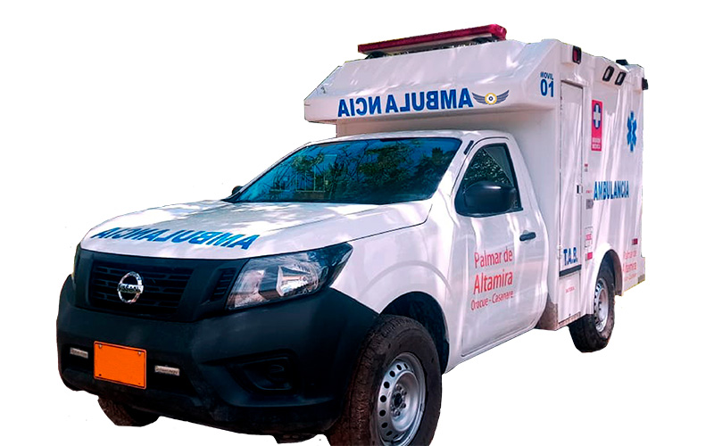

Nueva inversión en movilidad asistencial
Fecha: 05 de julio de 2026
Autor: Oscar M Mora G
Fortalecimiento de la flota

La institución anunció el fortalecimiento de su flota de ambulancias con el objetivo de mejorar los tiempos de respuesta y la atención de los pacientes.
La nueva estrategia permitirá ampliar la cobertura de servicios y optimizar la disponibilidad de vehículos en diferentes zonas de la ciudad.
Compromiso institucional
Los directivos destacaron que esta inversión representa un compromiso con la calidad del servicio y la seguridad de los usuarios.
La institución continuará desarrollando estrategias para mejorar la atención y la experiencia de los pacientes.